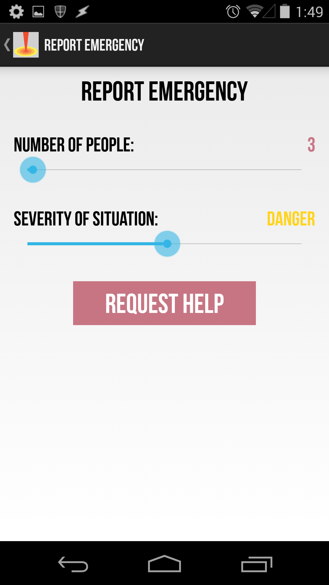

Impact and opportunity: Every year, 10,000 deaths and injuries result from natural disasters in the United States, alone. 25% of those deaths could have been preventable with faster, more directed search and rescue efforts. As part of the CITRIS mobile app challenge, my team created Flare, a location-based emergency response Android app to help emergency response teams (ERTs) prioritize their response efforts and allow victims to self-help until ERTs arrive, so that 25% can be lowered.
What Flare does:
Automatically sends a user's location to ERTs in the event of a natural disaster.
Allows users to designate the severity of the emergency at their location.
Preemptively notifies the user of weather alerts within a given radius of their location during inclement weather
Supplies a locally-hosted manual detailing self-help response steps before, during, and after a natural disaster.
My role: I lead communication between our team and our mentors, interviewed our users, compiled the content for our manual, and helped design the front-end user interface for our app.
The Process
Questions we wanted to answer
How can we give ERTs the foresight to know where to search for disaster victims?
What resources do disaster victims need most after a natural disaster?
How can increase peace of mind for both parties in this stressful situation?
Questions we asked users and ERTs
What information is crucial to a successful rescue effort?
What is the most stressful part of emergency response?
How are emergency response efforts in natural disasters currently facilitated?
How we developed our solution: Our first task was to understand the natural disaster landscape because we were unfamiliar with most emergency protocols. We identified our target users as both disaster victims and emergency response teams, those most directly affected in the event of an emergency. I interviewed the lead emergency responder from a Bay Area police department to determine current protocol and pain points experienced by responders.
Speaking to potential users helped us define our goal of providing victims a means of letting ERTs know where are and how severe the situation is. We also saw the importance of having a locally-hosted self-help manual users can access until ERTs arrive. From there, we determined the three main functionalities of our app: record location, provide weather alert details, and supply a disaster manual.
We initially developed the hierarchy of information that a user would interact with. We held the assumption that during a natural disaster, users are in shock and don't want to deal with a complicated app. Because of this, we iterated over designs where users can find any part of the app in three or fewer taps. Below are images early wireframes and a screen grab from the working app.

Challenges and Things I Learned
Simplifying the interface: This was my first experience designing a mobile app. Considering the information flow and hierarchy first was helpful in determining the screen content.
An app is a business: The mobile app challenge framed every app as a company, and helped me understand the logistics of maintaining a startup - from roadmapping to funding.
Elevator pitches: Every week, we had to deliver an elevator pitch, so I got a lot of practice in summarizing a project in 90 seconds or less.